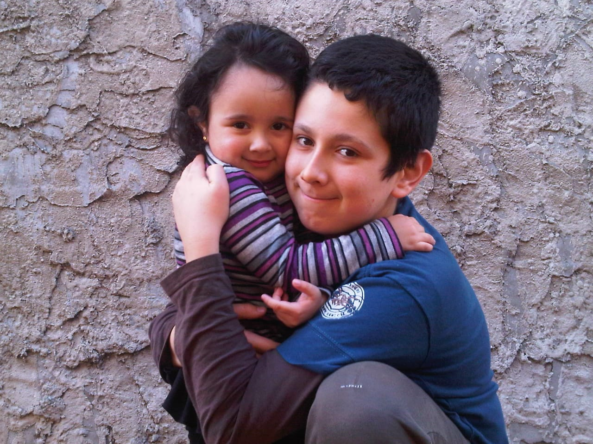
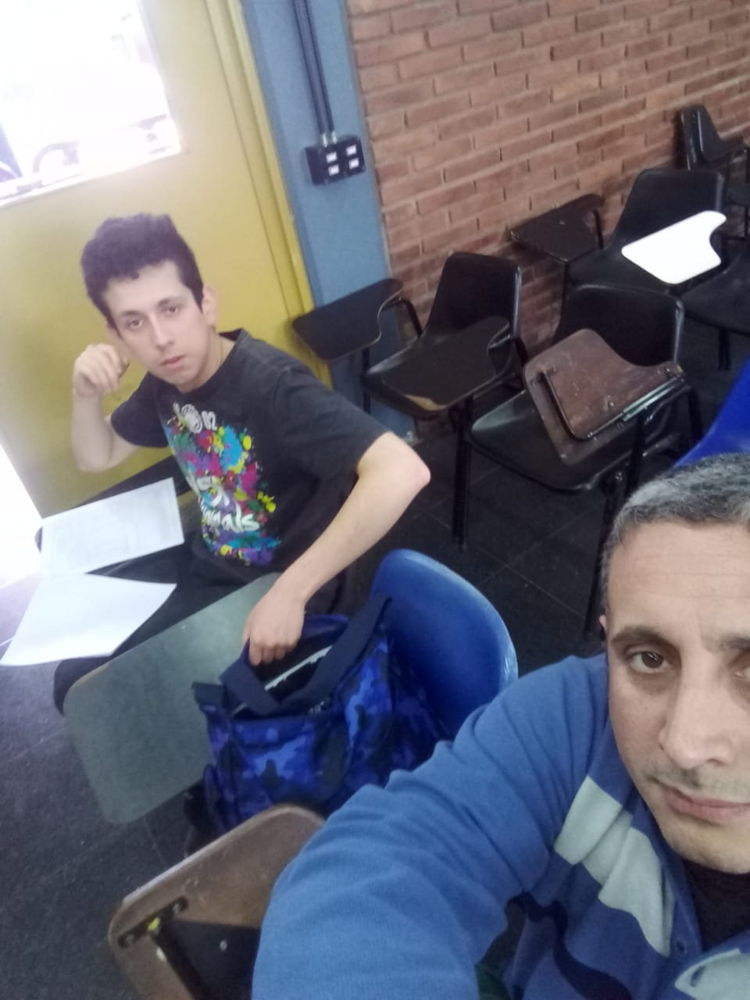

Bueno, quería hacerte una página web por dos razones, una, que con una pagina web puedes crear una carta de cumpleaños imperecedera e indestructible, y otra, porque en este formato puedo adjuntar muchas fotos de nosotros y de vos.
Aunque a veces no nos entendamos, quiero decirte que te quiero Pa, gracias por acompañarme todo este tiempo, ahora voy a intentar hacerme cada vez más independiente, y ya vas a ver que si te escuchaba cuando me enseñabas cosas(lo mismo con mama). y aunque ahora no esté ahí, aun así los llevo en el corazón.
¡Feliz Dia Pa!